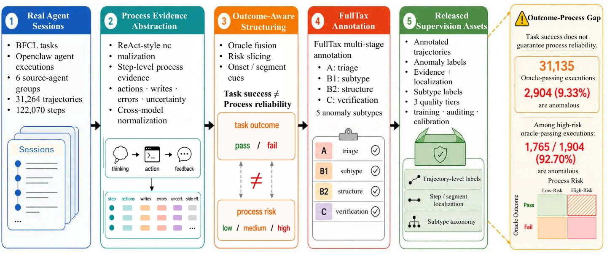
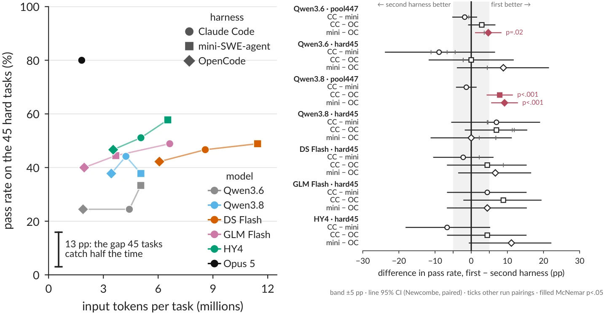
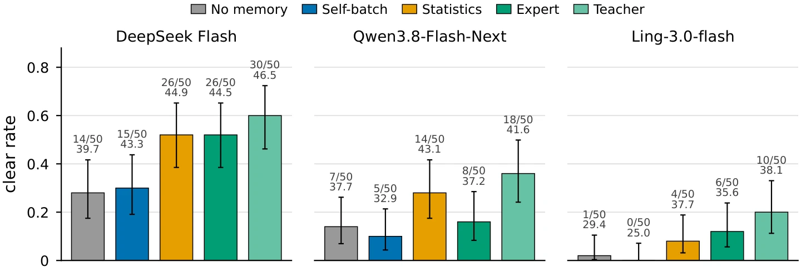
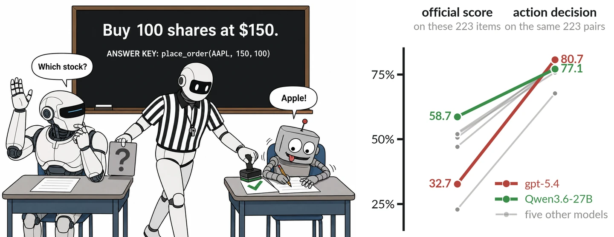
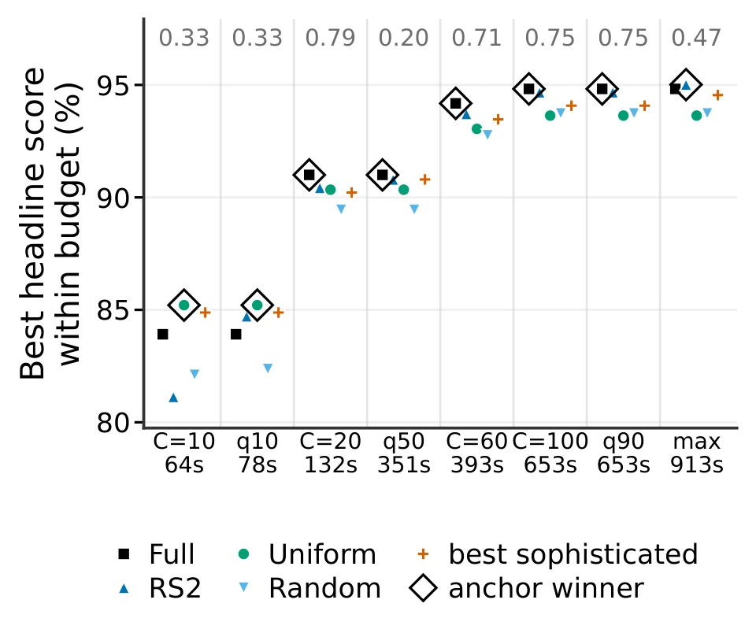
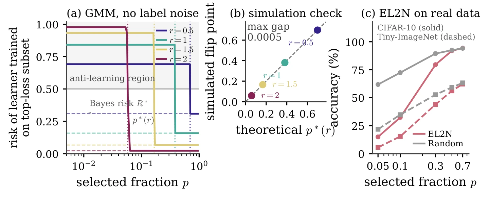
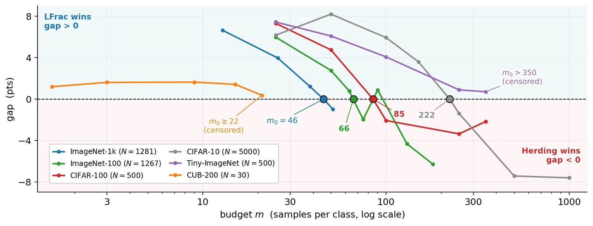
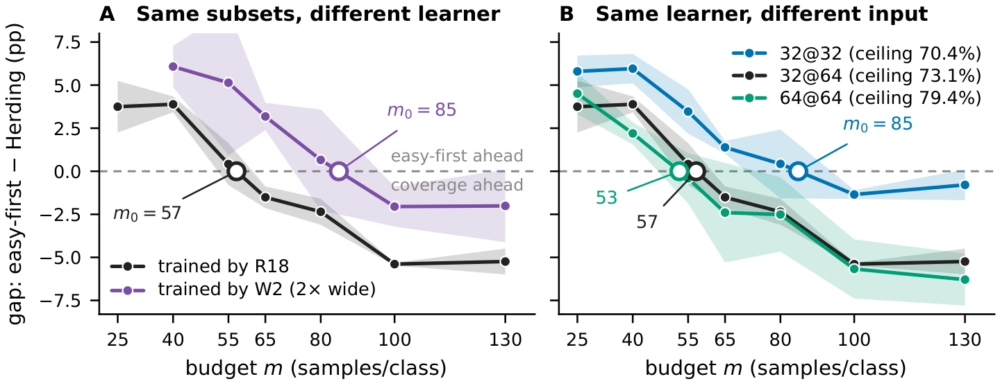
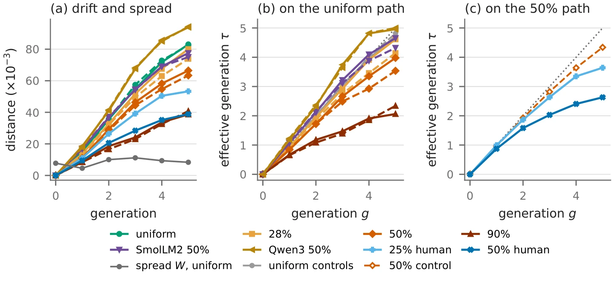
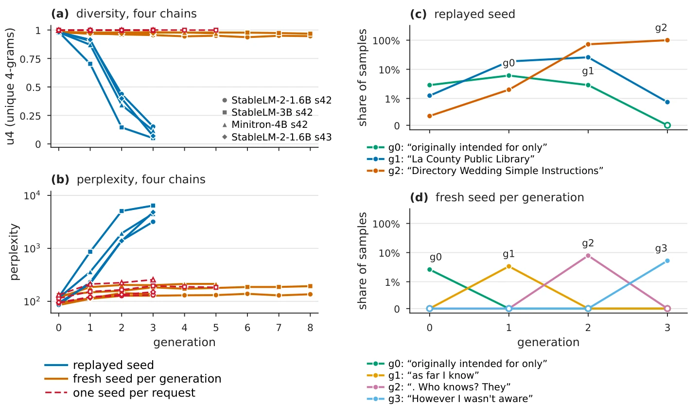

Published & accepted
-
OpenClawBench: Benchmarking Process-side Anomalies in Real-world Agent Execution Trajectories
Can an agent pass its task and still act unsafely? OpenClawBench captures failures that a final task check misses, including unsafe external writes, ignored errors, and weakly grounded claims. I built the dataset and trained a detector that flags anomalies in execution trajectories.

Task outcomes and process reliability in OpenClawBench.View figure -
Rethinking Dataset Quantization: Efficient Coreset Selection via Semantically-Aware Data Augmentation
Does coreset selection need a large pretrained model? Dataset Quantization relies on one and augments data only after selecting it, so selection and training see different data. Our method finds objects for semantically aware augmentation with a randomly initialized CNN and augments before selecting. It is competitive with or better than prior methods on ImageNet-1k and fine-grained datasets, at lower cost than the original method.

Under review · LLM agents
All under review at ICLR 2027
-
What Does a Harness Buy? Tokens, Mostly.
Does changing a coding agent’s harness improve its performance? On the larger task pool tested with two models, the only harness effect that cleared run-to-run noise was a loss. Cost varied by up to 3× per task for the same model. On a hard subset of SWE-bench Verified, changing harnesses flipped as many tasks as rerunning the same one.

Token use and pass rate (left); harness differences and reruns (right).View figure -
Experience Is Not Knowledge: Where the Decision Knowledge in an Agent’s Memory Comes From
Does writing down experience give an agent useful knowledge? In Slay the Spire, self-written memory showed no detectable improvement in clear rate. Memories written from simulator statistics or from a stronger model’s prior knowledge had higher observed clear rates than the no-memory baseline. A teacher memory, in which a stronger model read the agent’s own games, gave the one gain that survived multiple-comparison correction. Replay at shared decision states showed that the agent acted on its memory. Later games showed that a mistaken rule became a new error.

Game clear rates with different sources of memory.View figure -
Asking Earns Nothing: Scoring the Decision to Act in BFCL Multi-Turn
Does a tool-use benchmark reward an agent for asking when information is missing? BFCL multi-turn skips the very turn where it should ask. A one-line prompt pushing the agent toward action raised official scores on the two should-ask categories and their base twins by 13.5–23.5 percentage points with no detectable change in its decision accuracy, measured using the benchmark’s own paired complete and incomplete requests.

The skipped clarification turn and the resulting ranking reversal.View figure


Other manuscriptsData selection & recursive training · 6 papers
All under review at ICLR 2027.
Data selection
-
Are Coreset Selection Methods Worth Their Cost?
Y. Liu, Z. Han.
arXiv
CIFAR-10 accuracy at matched compute budgets.View figure -
When Hard-Example Selection Fails: Gaussian Thresholds and Empirical Diagnostics
Y. Liu, Z. Han.

Gaussian thresholds, simulation checks, and empirical selection results.View figure -
What Does 5% Mean? The Coreset Regime Boundary Is Pinned in Samples per Class
Y. Liu, X.-L. Yin, Z. Han.

Where coverage overtakes easy-first selection, in samples per class, on six datasets.View figure -
Useful to Whom? The Easy-versus-Coverage Boundary Moves with the Learner
Y. Liu, X.-L. Yin, Z. Han.
arXiv
Identical subsets with different learners; one learner with different inputs.View figure


Recursive training
-
A Dominant Supplier Slows Recursive Drift More Than It Steers It
Y. Liu, Z. Han.
arXiv
Drift and effective generation under different supplier mixtures.View figure -
Break Step: Recursive Training Resonates with Replayed Sampling Noise
Y. Liu, Z. Han.
arXiv
Diversity and phrase repetition under replayed and fresh sampling seeds.View figure